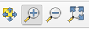
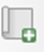
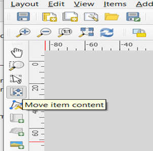
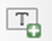
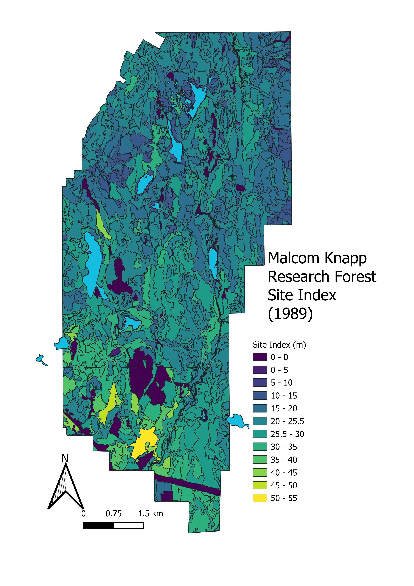
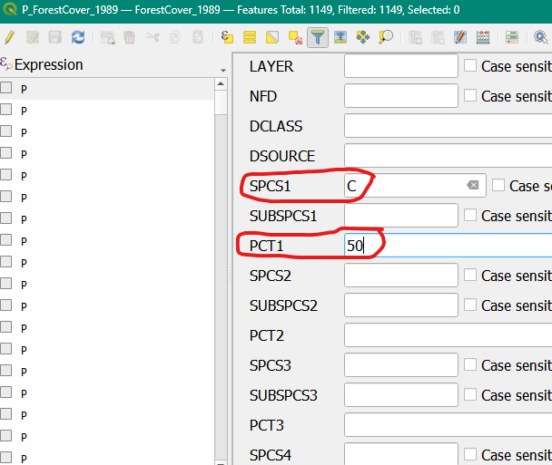
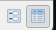
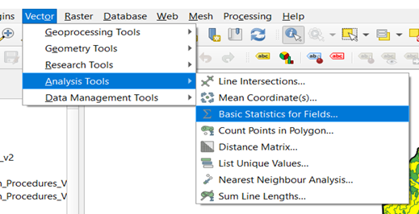
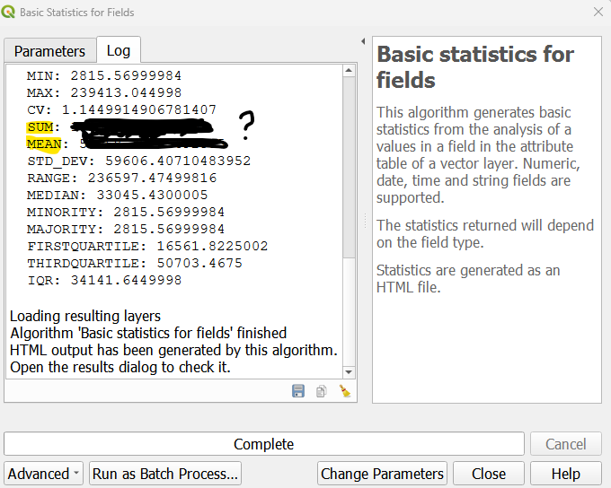
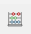

Warning in readLines(file, warn = readLines.warn): incomplete final line found
on 'chapterauthors.yml'2 Introduction to Forestry Datasets in QGIS
Written by
Sarah Smith-Tripp
Lab Overview
Foresters use maps to visualize site composition, leading tree species, and volume across a landbase. In this lab, we introduce the datasets enable forestry professionals to create these maps. The focus of the lab is not on the GIS approach, but rather becoming familiar enough with the data structure you feel empowered to create your own maps for a landbase. We will also do some simple calculations within QGIS to better understand the data structure and possible applications. This lab uses forest inventory data from Malcom Knapp Research Forest (MKRF)
Learning Objectives
Import & understand spatial data sets from MKRF
Create a map that visualizes site indices
Create a map for leading tree species and include descriptive statistics (area covered, XX YY)
Calculate a volume estimates for western red-cedar in 1989
Compare calculated values for 1989 to estimates for 1999 and discuss the changes
Data
We will be working with GIS data available from Malcom Knapp Research forest. Description of data is included in Section 3.1. ## Background {.unnumbered}
Malcom Knapp Research Forest is a UBC affiliated research forest that is located near Maple Ridge, BC. The forest was established in 1949 and is managed by staff to be commercially viable and financially independent of UBC. The forest is ~5,000 ha and covers a large mountainous area. Most of the forest is located in the Coastal Western Hemlock (CWH) biogeoclimatic (BEC) zone. As a result, some of the trees are very large (> 2 m than diameter and over 65 m).
Task 1: Set Up QGIS
Step 1: Open QGIS on your laptop. Choose ‘blank project.’ Save the project with a file name that you can remember and location you can remember. Ex: Exercise1_Map.qgz
When you first open QGIS you will notice a main map canvas. To the left of this map canvas are two windows Browser and Layers. The Layers panel is the best way to understand the order of data on the main map canvas and is the best way to change the data presentation (symbology) and access the data in tabular format. On the top the QGIS menu are a series of additional buttons which we will introduce throughout this lab and course. Finally, on the bottom are the details of the map canvas including the current center or selected coordinate, the map scale, rotation, and the coordinate reference system (CRS)
Step 2: Set the project CRS. In BC, the provincial standard CRS is NAD83/BC Albers map projection (EPSG:3005). To set the projects CRS navigate to the bottom left of the window and click on the EPSG:4326 as shown below:
Search for EPSG:3005 and click apply and Ok.
Step 3: Set up a ‘favorites’ folder to easily access the MKRF data. Right click on ‘Favorites’ and click add a directory. Navigate to the storage location for you MKRF data. Click ok
Building Familiarity
Step 4: Add P_Boundary_MKRF.gpkg to the map. From the browser window select the file and drag and drop into the main map. This will add the boundary MRKF as a polygon feature. This layer is shown in the main map and listed in ‘layers’ on the left-hand ‘layers’ panel.
Step 5: Change the symbology of the boundary file by right clicking on P_Boundary_MKRF.gpkg in the layers pane. Select Properties. A window will pop-up. On the left-hand side the layer properties including: General, Source, Symbology, Labels, Fields, Joins, Diagrams. Select Symbology (The icon with the paintbrush). Keep the format as ‘single symbol.’ Change the layer to have a black outline with no fill by clicking on the icon ‘simple fill.’ Change the fill color to ‘transparent’ and the stroke width to ‘0.2’
Step 6: Add L_streams_major.gkpg. In the ‘layers’ panel this will be the first, reflecting that this layer is above the boundary file. Change the color to something that represents streams (like.. blue?)
Step 7: Navigate the around the map project by selecting the icon. You can use the  to zoom and out.
Step 8: Add the P_lakes.gpgk. Right-click on this layer in the layers panel and select Attribute Table. This gives details about the polygon features of the dataset. The shape area for each has been calculated in the ‘Shape_Area’ field.
Question 1:
How many features (i.e. shapes) are in the P_lakes.gpkg?
Question 2:
Where are the high versus low site indices relative to the terrain, relative to the north versus south, and relative to roads?
Task 2: Making a Site Index Map
Site index is a measure of productivity. It is technically defined as: expected height (m) of the best trees (not damaged, biggest) of the dominant species at a reference age of 50 years breast height age. The site index reflects the potential of the site to grow this dominant species. Although this might also indicate how another species might do, this does not give a measure of the possible productivity of another species. For example, a site that is douglas-fir leading and has a high site index would not indicate that a species like whitebark pine (a high alpine species) would also do well. Also, if the soils change (e.g., landslides, fertilization, etc.) or the climate/hydrology changes, the site index might not be a good an indicator of the productivity for the historically dominant species. Importantly, for site index to be reported there have to be trees in the stand. In the MKRF dataset some recently harvested stands may show a “0” for site index, but this is really an NA.
Step 1 Load P_ForestCover_1989.gpkg. Right click on the layer in the layers window and select Open Attribute Table. this will open an attribute table that describes the polygon components. Click on the the heading for SITEINDX to sort the table from smallest to largest site index. Many polygons have “0.0 m” for a site index value. Scroll right to the “non-forest descriptor” or NFD columbn. Here notes like “NSR” note sites that are “not-satisfactorily restocked, or there may be lakes. These are examples of polygons where there are no trees and thus no site-index value.
Step 2 Click to the SITEINDX column heading again to sort from largest to smallest. See ?sec-Q3 to answer. Close the attribute table.
Step 3 Right click on the P_ForestCover_1989 layer again in the layers panel and select Properties
Select Symbology and change the symbol from “single Symbol” to “Graduated”
Under Value click the small down arrow on the right to select the “SITEINDX” column.
In the Color ramp field click the small down arrow on the right to select the “Viridis” color palette
At the bottom of the symbology window, select Classify. This will classify the values in “SITEINDX” based on their values into different colors associated with the viridis color ramp.
Under Classify and Mode select “Equal Interval” and change the number of classes to “12”. Click Classify again.
In the Classes pain (the main white box) change these to 5 m classes as 0.00 to 0.00 (i.e., no site index), 0.05 to 5.05, 5.05 to 10.05, 10.05 to 15.05, etc.
Click Apply and OK. The symbology window will close and you can now see your recolored layer

Step 4 Create a site index map to export as a picture. ::: {#tip-mapmaking .callout-tip} check out this link for some useful resources on making maps in QGIS :::
Select Project -> New Print out Layout. Name your print layout “MRKF_1989SiteIndex” and click OK. A blank space appears in a new window with new Layout icons along the left-hand side.
In the left-hand of this new window, select  to (Add a New Map to the Layout). A + sign appears as a cursor. Drag the cursor around the blank area. Your map appears in this print layout. NOTE: If you do not see a map in Layout View use Zoom Whole Page =You may also need to reposition the map in the copied box using:

In the left-hand of this new window, select to (Add a New Map to the Layout). A + sign appears as a cursor. Drag the cursor around the blank area. Your map appears in this print layout. NOTE: If you do not see a map in Layout View use Zoom Whole Page =You may also need to reposition the map in the copied box using:
Right click on your map and select Page Properties. Change the orientation from “landscape” to “portrait”.
Right click on the map again and select Item Properties this time. Change the map scale (see the right-hand side of your screen for the properties) to expand your map to fill the page. A good scale value is 50000 which means 1 cm on the map represents 0.5 km (50,000 cm)
Use on the left-hand side to add a Legend (the + sign appears in the cursor, drag the cursor and Legend appears).
Use to add a Scale Bar. Click on the Item Properties box. Change the “Division Units” to kilometres and then select a scale graphic you like.
Use  to add a Title.
Add a north arrow by clicking and drag the curse to the map area.
Right click on each item on your map and select Item Properties to make any other changes to improve the appearance of your map. Alternatively, on the right-hand side there is Item properties icon where you can change the style of the items you added to the map (i.e., north arrow, legend, your map). NOTE: One could spend many hours on this! Just do some improvements.
Step 5 Export your map as an image. Go to Layout and select Export as Image. Save the image the same location as your document you are recording lab responses.
Question 3:
What was the largest site index in m? What was the leading or dominant species for that polygon? Give the full name and the Latin name for the species.
Question 4:
Add 5 m contours onto your map canvas. Where are the high versus low site indices relative to the terrain, relative to the north versus south, and relative to roads?
Map 1
Include your Site Index Map with a proper title, legend, scale, and arrow bar.

Task 3: Visualize Stands Dominated by Western Redcedar in 1989
Step 1 Close the Layout window and go back to the Data view window again.
Step 2 Change the fc_1989-layer properties to a Single Symbol again.
Step 3 Right click on the fc_1989 layer and choose Open Attribute Table. Each line of this table shows the attributes for one polygon (including SITEINDX that you already used). You can see the total number of polygons at the top of the Attribute Table (1149 polygons). Keep this attribute table open in this new window.
Step 4 Select polygons where the first species is western redcedar and the cedar is more than 50% of the species composition. To do so you will use a “Query.” To select polygons where the first species is western redcedar and more than 50% of the species composition, you will need to do a Query.
In the Attribute Table select to open up the Query Fields
Scroll down a bit to find “SPSC1” and “PCT1”, select for SPSC1=C and PCT1>=50. Click Select Features

Click the  to return to the tabular format. You can see that we have now selected have a SPCS1 (leading species) of “C” for cedar, and that these polygons are >= 50%. Use this to answer question 5
Step 6 Export your selection under it’s own shapefile. You can minimize or close the attribute table. In the layers panel right click and select Export -> Save Selected Features As save this as a gpkg file in the same folder as your MRKF data. Name this P_FC_1989_CedarLeading.gpkg.
Step 7 Calculate the area and volume of cedar dominant stands in 1989.
Click on the vector icon in the top menu and go to Analysis Tools -> Basic Statistics for Fields
In the pop-up window select your P_FC_1989_CedarLeading shapefile. In the field to calculate statistics on click the downward arrow and select “Shape_Area.” Since this is a simple calculation, we will run this as a “temporary output.” Therefore, click Run on the bottom right.
C. In the window that appears, find the count, mean, and sum values. Use these to answer ?sec-Q7 and question 8.


Step 9 Calculate the merchantable volume in the 1989 cedar dominant stands.
Right click on the P_FC_1989_Cedarleading layer. Find the Field Calculator  tool.
In the pop-up window make sure Create a new field is checked. Input a formula to calculate shape area on. To calculate volume for the polygon, we need to use a measure of volume for the area. We have VOL7_5 which is the volume of trees per hectare that are > 7.5 cm. We also have Shape_Area which is the area of the shape in m². We can use the following formula to calculate the volume per polygon
\[Total~Volume (m³) = Polygon~Area (XX) * Volume (m³/ha) \tag{2.1}\]
Do a unit calculation to set up the equation. Shape_area is in m² and VOL7_5 is in m³/ha. If we want output to be in m³ what value do we need for XX ?
Name the field “m3_volume.” Change the Output field type to “Decimal number (real)” and click ok. Estimates for volume for each polygon will now appear. Use these outputs to answer ?sec-Q9.
Use the Calculate basic statistics tool to calculate the average and total merchantable volumes in the cedar leading polygons.
Step 8 Make a map of the polygons dominated by western redcedar. Look back towards @tip-mapmaking to remind yourself of the process and the essential components to include in your map.
Question 5:
- How many western redcedar (>= 50%) polygons were there in 1989?
- Where are they located?
- What polygons are not selected with the filter applied to the data?
Question 6:
What is the FULL latin name for western redcedar (including the namer - a reference to the person that named the species)?
Question 7:
What is the average polygon size (ha) for the western redcedar dominated stands in 1989? NOTE: 10,000 m2=1 ha (i.e., 1 ha is 100m X 100 m = 10,000 m2)
Question 8:
What is the total area in ha of all these selected polygons combined?
Question 9:
What is the value of XX in Equation 2.1 above? Using this equation, hat is the merchantable m3 volume (i.e., merchantable volume for trees 7.50 DBH or larger) for all these selected polygons combined? Do you feel like this a lot? (for reference a utility pole is 1m^^3)
Map 2:
Include your map describing historically dominant cedar stands with a proper title, legend, scale, and arrow bar.
Task 4: Compare Changes in Western Redcedar from 1999 to 1989
Whew - you made it through the first interaction with QGIS in this course. Congrats 🎉. Your instructors used the same steps that you used for 989 to map and to get some statistics for western redcedar dominated stands, but this time for 1999. There were 1,220 polygons in 1999 and 170 were dominated by western redcedar (Figure 1). The average polygon size for these stands was 3.90 ha with a total number of ha of 662.53 ha. The merchantable volume for all of these stands combined was 319,903.0 m3.
Question 10:
Which year (1999 or 1989) had a large polygon size for western red-cedar dominated stands? Please answer in hectares.
Question 11:
Did the m3 for all these selected polygons combined increase or decrease from 1989 to 1999?
Question 12:
Based on your knowledge of forest dynamics so far, what might have caused these differences area and volume of western redcedar dominated stands between 1989 and 1999? HINT: Think about what human (e.g., new roads, harvests, silvicultural treatments, etc.) and natural (e.g., fires, landslides, etc.) disturbances may have occurred for MKRF in the CWH BEC zone in particular
Lab Questions & Deliverables
Complete answers to the following questions:
- Question 1: How many features (i.e. shapes) are in the P_lakes.gpkg
- Question 2: Where are the high versus low site indices relative to the terrain, relative to the north versus south and relative to roads?
- Question 3: What was the largest site index in m? What was the leading or dominant species for that polygon? Give the full name and the Latin name for the species.
- Question 4: Where are the high versus low site indices relative to the terrain, relative to the north versus south, and relative to roads?
- Question 5: (a) How many western redcedar (>= 50%) polygons were there in 1989? (b) Where are they located? (c) What polygons are not selected with the filter applied to the data?
- Question 6: What is the FULL latin name for western redcedar (including the namer - a reference to the person that named the species)?
- Question 7: What is the average polygon size (ha) for the western redcedar dominated stands in 1989? NOTE: 10,000 m2=1 ha (i.e., 1 ha is 100m X 100 m = 10,000 m2)
- Question 8: What is the total area in ha of all these selected polygons combined?
- Question 9: What is the merchantable m3 volume (i.e., merchantable volume for trees 7.50 DBH or larger) for all these selected polygons combined? Do you feel like this a lot? (for reference a utility pole is 1m^^3)
- Question 10: Which year (1999 or 1989) had a large polygon size for western red-cedar dominated stands? Please answer in hectares.
- Question 11: Did the m3 for all these selected polygons combined increase or decrease from 1989 to 1999
- Question 12. Based on your knowledge of forest dynamics so far, what might have caused these differences area and volume of western redcedar dominated stands between 1989 and 1999? HINT: Think about what human (e.g., new roads, harvests, silvicultural treatments, etc.) and natural (e.g., fires, landslides, etc.) disturbances may have occurred for MKRF in the CWH BEC zone in particular
Complete Maps for :
- A site index map for Malcom Knapp Research Forest
- A map showing the locations of the Western Red Cedar leading forest polygons from 1989.
- Make sure that your map includes:
- A title
- A scale bar
- A north arrow
- A proper legend